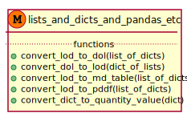
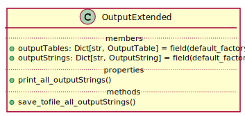
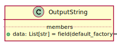
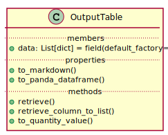

Input-Output¶
Dealing with lists and dictionaries and pandas…¶
Functions¶
module to deal with lists, dictionaries and pandas
dol: dict of lists
lod: list of dicts
pddf: pandas dataframe

-
streng.common.io.lists_and_dicts_and_pandas_etc.convert_dol_to_lod(dict_of_lists)[source]¶ converts dict of lists –> list of dicts
-
streng.common.io.lists_and_dicts_and_pandas_etc.convert_lod_to_dol(list_of_dicts)[source]¶ converts list of dicts –> dict of lists
Classes¶
Classes for managing output results
-
class
streng.common.io.output.OutputExtended(outputTables: Dict[str, streng.common.io.output.OutputTable] = <factory>, outputStrings: Dict[str, streng.common.io.output.OutputString] = <factory>)[source]¶ A class for multiple outputs

-
outputTables¶ A dictionary of OutputTables with a string key
- Type
-
outputStrings¶ A dictionary of OutputStrings with a string key
- Type
-
outputStrings: Dict[str, streng.common.io.output.OutputString]¶
-
outputTables: Dict[str, streng.common.io.output.OutputTable]¶
-
property
print_all_outputStrings¶
-
-
class
streng.common.io.output.OutputString(data: List[str] = <factory>)[source]¶ An output given as a list of strings

-
class
streng.common.io.output.OutputTable(data: List[dict] = <factory>)[source]¶ An output table given as a list of dictionaries.

It can be converted for presentation (or usage) as a pandas dataframe or a markdown table
-
property
to_markdown¶ Converts data (list of dicts) to a markdown table using tabulate.
- Returns
a markdown table
- Return type
-
property
to_panda_dataframe¶ Converts data to a pandas dataframe
- Returns
a pandas dataframe
- Return type
pd.DataFrame
-
property